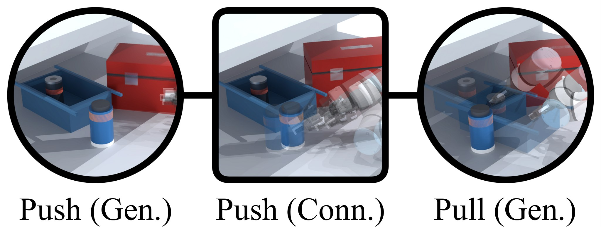

Long-horizon manipulation tasks require a robot to perform a sequence of physical interactions with its environment, typically combining several different skills. Planning such behaviors efficiently is challenging: given a library of parameterized skills, solutions lie in a vast hybrid space of skill sequences and their parameters, and evaluating each candidate skill's feasibility and effect with a high-fidelity world model such as a physics simulator is computationally expensive. MOSAIC, a recent skill-centric approach, lets the skills guide a non-sequential search toward the regions of this space where they are likely to succeed; however, it pays the full cost of simulation for every parameterized skill it considers.
In this work, we introduce Lazy-MOSAIC, a lazy planning framework that instead searches over hypothesized skill outcomes. A cheap learned skill-effect world model predicts, in a fraction of a millisecond, a skill's feasibility and the world state it produces. Lazy-MOSAIC then uses these predictions to focus expensive simulation on promising candidate skills and, when a hypothesis is invalidated, repairs only the affected part of the search, while ensuring that every skill in a returned plan is validated in simulation. We evaluate Lazy-MOSAIC on cluttered-shelf retrieval tasks of increasing difficulty and demonstrate it on a physical robot, showing that it plans substantially faster than baselines with fewer simulator queries, while matching or exceeding their success rate in every setting.
MOSAIC spends 83.4% of its planning time simulating skills, most of which never make it into the final plan. Lazy-MOSAIC keeps MOSAIC's generators and connectors, but plans over cheap predictions first and pays for simulation only where it matters.

A learned skill-effect model predicts, in a fraction of a millisecond, whether a proposed skill will succeed and what world state it will produce.
Predictions go into an optimistic graph, which the search treats as realizable, so promising skill sequences are found without simulating them.
Only promising skills are rolled out in the simulator. If a prediction was wrong, only the part of the search that depended on it is repaired, and every skill in a returned plan has been simulated.
Three shelf tasks with a UR10e arm, simulated in ManiSkill3 at easy, medium and hard difficulty. The green region marks the goal.
Retrieve an object from behind clutter.
The containing bin has to be manipulated first.
The wrench must be repositioned before it can be grasped.
Retrieving an object from a container among clutter (3× speed).
Moving a wrench into the goal region on a shelf.
@article{mishani2026lazymosaic,
title = {{Lazy-MOSAIC}: Accelerating Skill-Centric Manipulation Planning
with Learned Skill-Effect World Models},
author = {Mishani, Itamar and Krishnakumar, Mukund and
Salzman, Oren and Likhachev, Maxim},
journal = {arXiv preprint arXiv:2611.21517},
year = {2026}
}